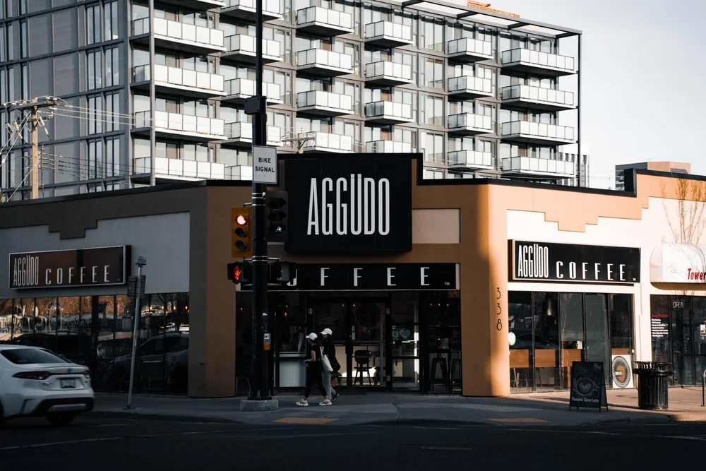

Number 3
At my number 3 spot I have Starbucks located in crowfoot. Very nice spot to study with free WIFI and a decent amount of comfortable seating. The store stays open till 9 pm making it a good spot to get a long study session in after classes. If you sit in the right spot you can watch as the sun sets casting a beautiful gradient of colors on to COP and the city below.

Number 2
At my number 2 spot I have AGGUDO coffee shop in Kensington. Very beautiful spot I’ve studied here a few times because of its proximity to the SAIT campus. Its located very close to the Sunnyside train station making it one the most transit accessible spots on my list. If you are a driver, you can usually find parking on the street nearby, but you will have to pay for parking. The vibes are really with the store being on the corner outlooking the busy streets of Kensington. AGGUDO offers free WIFI of course you just need to ask the very pleasant staff for the password. The reason this isn’t at the top of my list is because unfortunately I am not the only person who enjoys this spot, and I have had troubles finding a table to work at most hours of the day.
